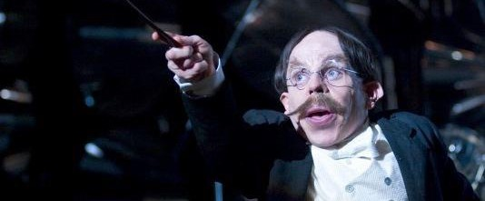

Casa Ravenclaw
Ravenclaw es una de las cuatro casas que componen el Colegio Hogwarts de Magia y Hechicería, fundada por Rowena Ravenclaw, quién tuvo una hija, cuyo fantasma es la Dama Gris la cual fue asesinada por el Barón Sanguinario. Su hija le robó la diadema y huyó a los bosques de Albania, lugar donde fue asesinada, y donde años después Lord Voldemort encuentra la diadema y la esconde en la sala de los menesteres, Colegio Hogwarts de Magia y Hechicería. Se dice que fue Ravenclaw quien le puso el nombre al castillo. El dueño de esta casa es Filius Flitwick.
